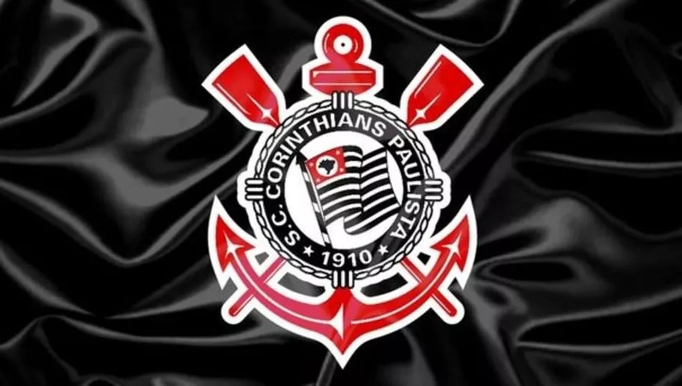
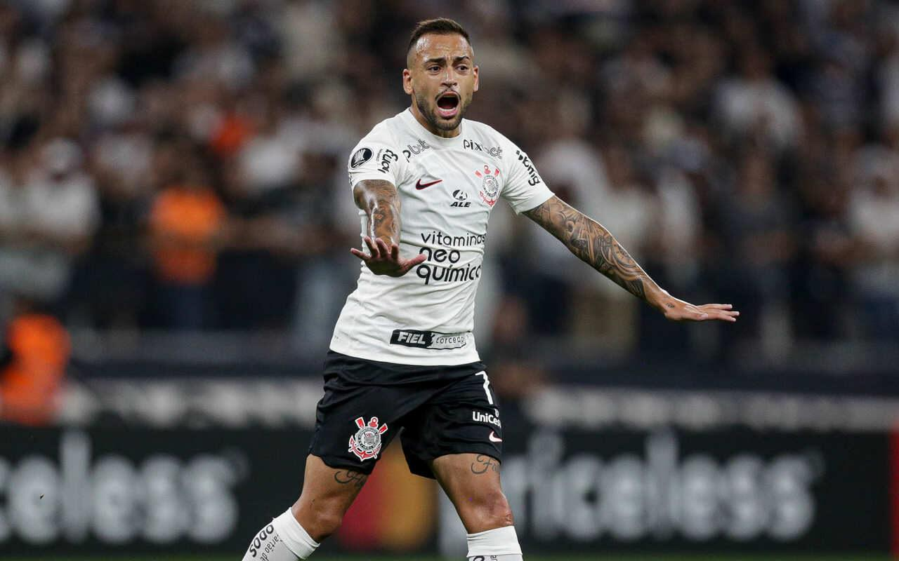
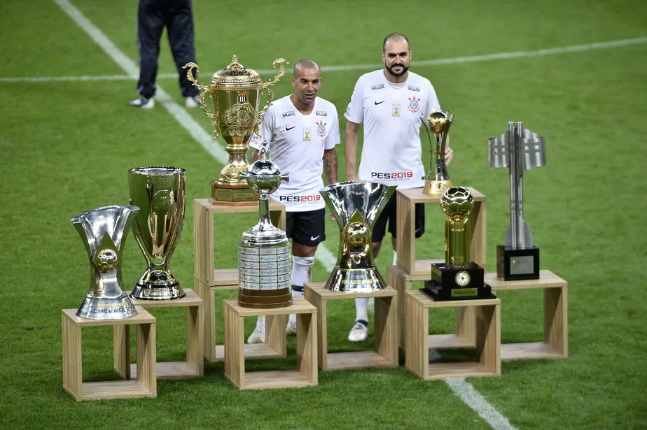

Modelos de carterinha

O Sport Club Corinthians Paulista, comumente conhecido apenas como Corinthians, é um clube de futebol brasileiro com sede na cidade de São Paulo. Fundado em 1º de setembro de 1910 por um grupo de operários, o Corinthians é um dos clubes mais populares e bem-sucedidos do país.
Um dos momentos mais marcantes da história do Corinthians ocorreu em 1977, quando a equipe conquistou o Campeonato Brasileiro pela primeira vez. Sob o comando do técnico Oswaldo Brandão e com jogadores como Basílio, Wladimir e Sócrates, o time venceu o São Paulo na final por 2 a 1 e levou o título para a torcida corintiana.
Outro momento inesquecível para os torcedores do Corinthians foi a conquista da Copa Libertadores da América em 2012. Comandada pelo técnico Tite e liderada em campo pelo atacante Emerson Sheik, a equipe derrotou o Boca Juniors na final e conquistou o título mais importante do futebol sul-americano pela primeira vez em sua história.
O Corinthians também é conhecido por sua torcida fiel e apaixonada, que costuma lotar os estádios em que o time joga. O clube tem como principal rival o Palmeiras, com quem disputa o clássico conhecido como Derby Paulista.
Últimas noticías

Vilão na derrota do Corinthians contra o Independiente del Valle pela Libertadores, Maycon assumiu a culpa no segundo gol dos equatorianos e pediu desculpas pela falha na Neo Química Arena.
Visivelmente abalado e com lágrimas nos olhos, o camisa 7 foi acolhido pelo grupo no vestiário e lamentou o erro que resultou na vitória dos atuais campeões da Sul-Americana e Recopa.
- O erro foi meu. Respeito demais o Corinthians. A gente não entra em campo para errar, nada justifica. Todos me deram muito apoio, Alessandro, Duílio, o grupo. Infelizmente retribui de uma forma que não gostaria, peço desculpas aos jogadores, que correram muito, o time estava bem. Depois do gol, desestabilizou. Não posso aceitar um erro desse, dói, não tem muito o que falar - declarou Maycon na zona mista.
A falha de Maycon, que atuou como primeiro volante no esquema de Vanderlei Luxemburgo, aconteceu aos seis minutos do segundo tempo. Após passe de Róger Guedes, o camisa 7 não conseguiu dominar a bola tocou na fogueira para Murillo, que não dominou. A bola sobrou para Lautaro Díaz, que finalizou rasteiro, sacramentando a vitória dos visitantes.
A situação do Corinthians na Libertadores é crítica. Com três pontos, a equipe de Vanderlei Luxemburgo ocupa o terceiro lugar no Grupo E da Libertadores, atrás do Independiente del Valle (6 pontos) e Argentinos Juniors (7 pontos).
Títulos e taças:

O Corinthians é um dos clubes mais vitoriosos do futebol brasileiro e tem um extenso currículo de títulos conquistados ao longo de sua história. Entre os principais títulos estão:
2 Copas Libertadores da América (2012 e 2021)
2 Mundiais de Clubes da FIFA (2000 e 2012)
1 Recopa Sul-Americana (2013)
1 Supercopa Sul-Americana (1991)
1 Copa Conmebol (1995)
30 Campeonatos Paulistas
7 Campeonatos Brasileiros
1 Copa do Brasil
Além desses títulos, o Corinthians também tem em sua galeria várias outras conquistas, incluindo torneios amistosos e regionais.